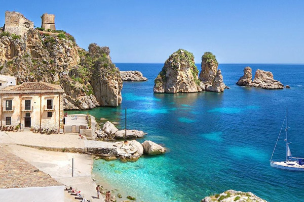
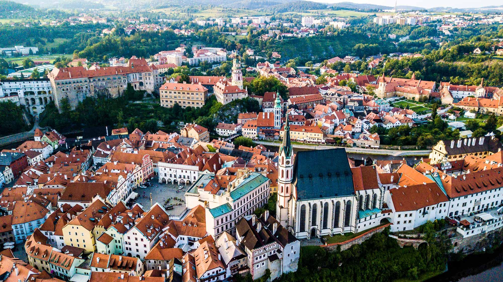

Home
ASIA
Geographical facts of Asia
There are more than 150 volcanoes in Indonesia.
The Philippines is made up of 7,641 islands.
Puerto-Princesa Subterranean River in Palawan, Philippines is one of the longest underground rivers in the world.
The Equator, Tropic of Cancer, and Arctic Circle all pass through the Asian continent.
The deepest trench of the world: Mariana Trench lies in the Pacific Ocean near the Philippines.
The highest point in the world; Mount Everest and the lowest point in the world; The Dead Sea can be found on the Asian continent.
Fun Facts about Asia
South Korea has a separate Valentine’s Day for single people.
90% of the world’s rice is consumed in Asian countries.
Asia has the highest number of billionaires in the world and China is home to more billionaires than the whole of the United States.
Every year there is a festival in Thailand dedicated purely to monkeys.
Singapore’s national anthem is in micro-text on the back of their $1,000 note.
Countries of Asia
India
Japan
Pakistan
China
Many More
*************************************************************************************************
EUROPE
Geographical facts of Europe

Europe is home to two countries that are completely landlocked by Italy.
The Mediterranean Sea is home to many beautiful islands.
Vatican City is also the smallest country in the world.
Istanbul is the largest city in the world that is on two different continents.
Spain means ‘land of the rabbits’.
Europe has too many country that you can't count easily.
Fun Facts about Europe

Europe has the highest GDP (income per person)
Europe was named after the Phoenician princess Europa.
Bulgaria is the oldest European nation by name, as it hasn’t changed its name since 681 AD.
Despite the continent being the second-smallest continent by area, it has the third-largest population with around 748 million people.
There are more bicycles than there are people in the Netherlands.
Countries of Europe
Russia
Egypt
United Kingdom
Italy
Many More
To know more click on
Asia
or
Europe